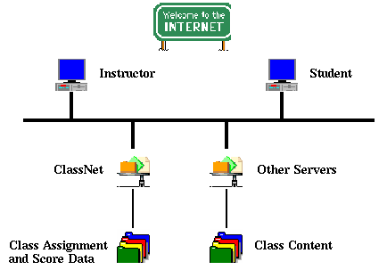

ClassNet Overview
What is ClassNet?
ClassNet is World Wide Web server software which manages Internet class
activities. Some of these activities include
-
Creation of a class by an instructor
-
Enrollment in the class by students
-
Creation of tests (really Web pages)
-
Submission and grading of tests
-
Reporting of scores by class and student
-
Discussion forums and chat rooms
-
Email between students and instructors
-
Portfolio development by students
-
and lots more!
How does ClassNet work?
Below is a diagram of a ClassNet server connected to the Internet:

The process begins when an instructor accesses Classnet via the URL
http://classnet.cc.iastate.edu/
and creates a class using the options provided. Once the class is created,
a student may choose the Enroll option using the same URL. The student
may then view the Student Menu to view grades, communicate with classmates
or change their password.
Students access their class content and tests through URLs provided
by their instructor. Tests are Web pages which may contain multiple-choice,
short-answer and essay questions. When students submit tests, the answers
are forwarded to ClassNet for grading and storage. In most cases, students
are unaware of this process. Students need only access ClassNet directly
to complete assignments, view scores, change their password or email address
or communicate with classmates. Links in the class content can route students
directly to the ClassNet Main Menu.
Instructors access ClassNet to create tests, update class information,
change student passwords and communicate with students. All testing is
automated and occurs after the due date of the test (if any). If a test
includes essay questions, the answers are routed to the instructor via
email.
How do I start?
If you are an instructor, click on Create on the ClassNet Main Menu
and supply the requested information. When you submit the information,
it will be sent to the ClassNet adminstrators for approval. You will receive
approval via email within a day. You may then login to your class and begin
to make assignments.
Students enroll themselves by clicking on Enroll on the ClassNet
Main Menu. As an instructor, you can allow them to be enrolled immediately
or approve their request first. If you chose the Approve option for your
class, an Approve button will appear on the instructor's Membership
Menu when students are waiting for approval. Students cannot login until
the approval is given if you are using the Approve option.
Making Assignments
The central activities for students in ClassNet are to complete assignments
and view grades. ClassNet is designed to support a growing number of assignment
types. The current assignment
types include:
To manage assignments, select the Assignment button on the Instructor
Menu. Your current assignments will be listed. To add an assignment, click
on Add in the Assignment Menu and enter the name of the assignment
and its type and click on Add. The assignment will be added to a
development area not accessible to your students. Edit the assignment
as specified by the assignment type and Publish when it is ready
for student use.
What else do I need to know?
-
ClassNet stores class administrative information and scores, not
class content
-
Anyone can access ClassNet from anywhere, any time
-
All information is password protected
-
New capabilities are constantly being added
Take a test drive
You may try out our sample class to see how ClassNet works for both the
instructor and student. Don't be afraid to try all the options. You will
be protected from making any changes which would affect the Sample Class.
Class: Sample Class
Instructor: The Instructor
Password: sample
Student: A Student
Password: sample
Select Sample Class from the Main Menu and choose either the instructor
or student username. As a student, try Forecasting the Weather. As an instructor,
try editing that assignment.
Click on Back in your browser to return to the Main
Menu.